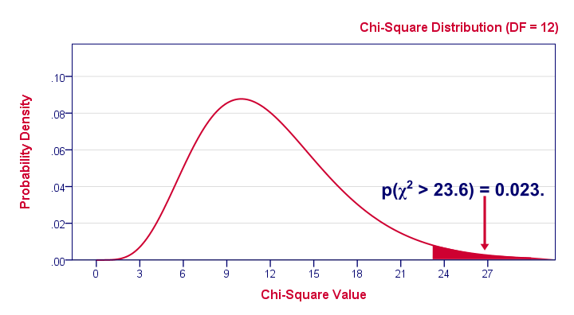

卡方独立性检验 – 是什么以及为什么？
作者：Ruben Geert van den Berg，归类于 卡方检验 & 统计学 A-Z
- 卡方独立性检验 - 是什么？
- 零假设 (Null Hypothesis)
- 假设前提 (Assumptions)
- 检验统计量 (Test Statistic)
- 效应量 (Effect Size)
- 结果报告 (Reporting)
卡方独立性检验 - 是什么？
卡方独立性检验用于评估两个分类变量在某个总体中是否相关。例如：一位科学家想知道在一个国家的所有人中，教育程度和婚姻状况是否相关。他收集了一个 n = 300 人的简单随机样本的数据，部分数据如下所示。
卡方检验 - 观测频数 (Observed Frequencies)
对于这些数据，一个好的第一步是检查婚姻状况和教育程度的列联表 (contingency table)。如下表所示，该表分别显示了每个教育程度类别中婚姻状况的频率分布。让我们来看一下。
表中的数字被称为观测频数 (observed frequencies)。它们告诉了我们很多关于数据的信息。例如：
- 有 4 个婚姻状况类别和 5 个教育程度；
- 我们成功收集了整个样本 n = 300 名受访者的数据（右下角单元格）；
- 我们有 84 名拥有学士学位的受访者（底行，中间）；
- 我们有 30 名离婚的受访者（最后一列，中间）；
- 我们有 9 名拥有学士学位的离婚受访者。
卡方检验 - 列百分比 (Column Percentages)
虽然我们的列联表是一个很好的起点，但它并没有真正向我们展示教育程度和婚姻状况是否相关。如下表所示，从一个稍微不同的表格中更容易回答这个问题。
该表分别显示了每个教育程度的受访者落入每个婚姻状况类别的百分比。在继续阅读之前，请仔细查看此表，并告诉我婚姻状况是否与教育程度相关，如果是，如何相关？如果我们查看第一行，我们看到 46% 的初中教育程度的受访者从未结婚。如果我们向右移动（朝着更高的教育程度），我们看到这个百分比下降：只有 18% 的拥有博士学位的受访者从未结婚（右上角单元格）。
反过来，请注意 64% 的博士学历受访者已婚（第二行）。如果我们朝着较低的教育程度移动（向左），我们看到这个百分比下降到 31%（仅有初中教育程度的受访者）。简而言之，受教育程度越高的受访者结婚的频率越高，而受教育程度较低的受访者结婚的频率较低。
卡方检验 - 堆积条形图 (Stacked Bar Chart)
我们的上一个表格显示了婚姻状况和教育程度之间的关系。通过将此表可视化为堆积条形图可以更清楚地看到这一点，如下图所示。
如果我们在图表中从上到下移动（从最高到最低的教育程度），我们会看到深蓝色条（从未结婚）增加。婚姻状况显然与教育程度相关。某人的教育程度越低，他/她结婚的机会就越小。也就是说：在我们的样本中，教育程度“说明”了婚姻状况（反之亦然）。那么人口总体呢？
卡方检验 - 零假设 (Null Hypothesis)
卡方独立性检验的零假设是两个分类变量在某个总体中是独立的。现在，婚姻状况和教育程度在我们的样本中是相关的，因此不是独立的。但是，我们不能得出结论，这适用于我们的整个总体。基本问题是样本通常与总体不同。
如果婚姻状况和教育程度在我们的总体中是完全独立的，我们仍然可能由于偶然性而在我们的样本中看到一些关系。但是，在一个大样本中出现很强的关系极不可能，因此驳斥了我们的零假设。在这种情况下，我们将得出结论，这些变量在我们的总体中毕竟不是独立的。
那么，这种依赖性（或关联）在我们的样本中到底有多强？如果在整个总体中变量（完全）独立，那么找到它的概率（或 p 值）是多少？
卡方检验 - 统计独立性 (Statistical Independence)
在我们继续之前，让我们首先确保我们理解“独立性”的真正含义。简而言之，独立性意味着一个变量对另一个变量“不说明任何内容”。另一种说法是，独立性意味着一个变量的相对频率在另一个变量的所有水平上都是相同的。再说一遍？好吧，如果我们找到了下面的图表呢？
教育程度对婚姻状况“说明了什么”？什么都没有！为什么？因为婚姻状况的频率分布在教育程度上是相同的：无论教育程度如何，结婚的概率都是 50%，从未结婚的概率是 30%。
在这个图表中，教育程度和婚姻状况是完全独立的。独立性假设告诉我们应该在样本中找到哪些频率：期望频数 (expected frequencies)。
期望频数 (Expected Frequencies)
期望频数是指在零假设成立的情况下，我们期望在样本中看到的频数。如果教育程度和婚姻状况在我们的总体中是独立的，那么我们也期望在我们的样本中看到这一点。这意味着列联表（包含期望频数）如下所示。

这些期望频数计算如下：\[eij = \frac{oi\cdot oj}{N}\] 其中
- \(eij\) 是期望频数；
- \(oi\) 是边际列频数 (marginal column frequency)；
- \(oj\) 是边际行频数 (marginal row frequency)；
- \(N\) 是总样本大小。
因此，对于我们的第一个单元格，计算如下：\[eij = \frac{39 \cdot 90}{300} = 11.7\] 等等。但我们不要太费心，因为我们的软件会处理所有这些。
请注意，许多期望频数是非整数。例如，11.7 名受访者是初中毕业且从未结婚。虽然现实世界中没有“11.7 名受访者”这样的东西，但这种非整数频数在数学上是完全可以的。因此，在这一点上，我们有 2 个列联表：
- 一个包含我们在样本中找到的观测频数 (observed frequencies) 的列联表；
- 一个包含如果变量真正独立，我们应该在样本中找到的期望频数 (expected frequencies) 的列联表。
下面的屏幕截图显示了这个 GoogleSheet中的两个表格（只读）。该工作表演示了用于此检验的所有公式。

残差 (Residuals)
观测频数和期望频数的差异越大，我们的数据与独立性的偏差就越大。那么它们有多大的差异？首先，我们从每个观测频数中减去每个期望频数，从而得到一个残差 (residual)。也就是说，\[rij = oij - eij\] 对于我们的示例，这将产生（5 * 4 =）20 个残差。较大的（绝对）残差表明我们的数据与零假设之间存在较大的差异。我们基本上将所有残差加起来，从而得到一个数字： χ 2 （发音为“卡方”）检验统计量。
检验统计量 (Test Statistic)
卡方检验统计量的计算公式为 \[\chi^2 = \Sigma{\frac{(oij - eij)^2}{eij}}\] 因此，对于我们的数据，\[\chi^2 = \frac{(18 - 11.7)^2}{11.7} + \frac{(36 - 27)^2}{27} + ... + \frac{(6 - 5.4)^2}{5.4} = 23.57\]
同样，我们的软件会处理所有这些。但如果您想查看计算过程，请查看这个 GoogleSheet。
因此，在我们的样本中，χ 2 = 23.57。这个数字总结了我们的数据和独立性假设之间的差异。 23.57 是一个很大的值吗？找到这个值的概率是多少？我们可以从它的抽样分布中计算出来，但这需要几个假设。
卡方检验假设前提 (Chi-Square Test Assumptions)
卡方独立性检验的假设前提是
- 独立观察 (independent observations)。如果 SPSS 中的每个个案都包含一个唯一的人或其他统计单元，则通常（并非总是）满足此条件。由于我们的数据就是这种情况，因此我们假设已满足此条件。
- 对于 2x2 列联表，所有期望频数 > 5。但是，对于 2x2 列联表，2 个独立比例的 z 检验优于卡方检验。
对于更大的列联表，所有期望频数 > 1 且不超过 20% 的单元格的期望频数 < 5。
如果满足这些假设，我们的 χ 2 检验统计量服从 χ 2 分布。正是这个分布告诉我们找到 χ 2 > 23.57 的概率。
卡方检验 - 自由度 (Degrees of Freedom)
如果我们给卡方分布 2 个数字，我们就可以从中获得我们想要的 p 值：
- χ 2 值 (23.57) 和
- 自由度 (degrees of freedom, df)。
自由度基本上是一个决定我们分布的确切形状的数字。下图说明了这一点。
好的。现在，自由度（或 df）的计算公式为 \[df = (i - 1) \cdot (j - 1)\] 其中
- \(i\) 是列联表中的行数，以及
- \(j\) 是列数。
因此，在我们的示例中，\[df = (5 - 1) \cdot (4 - 1) = 12.\] 并且在 df = 12 的情况下，找到 χ 2 ≥ 23.57 的概率 ≈ 0.023。我们只需在 SPSS 或其他合适的软件中查找即可。这是我们的单尾显著性 (1-tailed significance)。它基本上意味着，如果在我们的总体中这种关联为零，那么在我们的样本中找到这种关联的可能性为 0.023（或 2.3%）。

由于这是一个很小的机会，我们不再相信变量在我们的总体中是独立的零假设。结论：婚姻状况和教育程度在我们的总体中是相关的。现在，请记住，我们的 p 值 0.023 仅告诉我们变量之间的关联可能不为零。它没有说明这种关联的强度：效应量。
效应量 (Effect Size)
要了解卡方独立性检验的效应量，请查阅适当的关联度量。如果至少涉及一个名义变量 (nominal variable)，则通常是 Cramér’s V（一种用于分类变量的 Pearson 相关）。在我们的示例中，Cramér’s V = 0.162。由于 Cramér’s V 的取值范围在 0 到 1 之间，因此 0.162 表明关联性非常弱。如果两个变量都是有序的 (ordinal)，那么 Kendall’s tau 或 Spearman 相关 也将适用。
结果报告 (Reporting)
为了以 APA 格式报告我们的结果，我们可以这样写：“观察到教育程度和婚姻状况之间存在关联， χ 2 (12) = 23.57, p = 0.023。”
卡方独立性检验 - 软件
您可以在 Excel 或 Google Sheets 中运行卡方独立性检验，但您可能想使用更用户友好的软件包，例如
下图显示了 SPSS 生成的示例输出。
有关完整教程（使用不同的示例），请参阅 SPSS 卡方独立性检验。